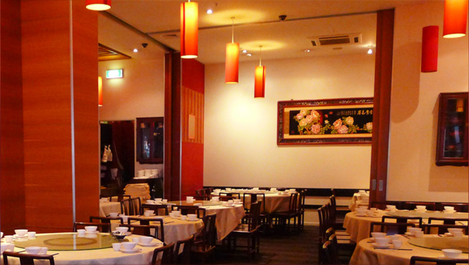
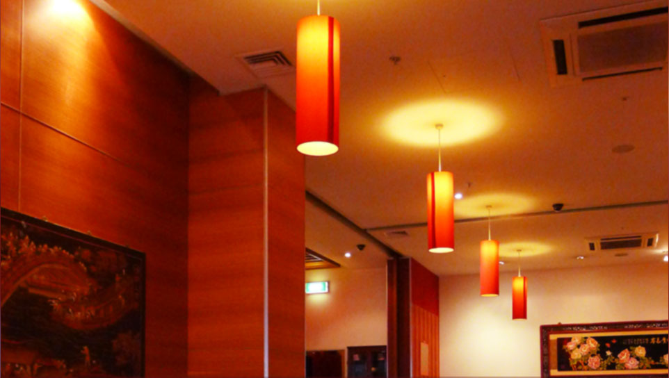
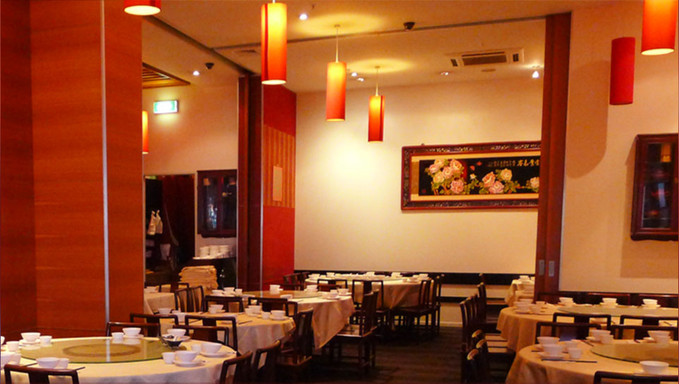
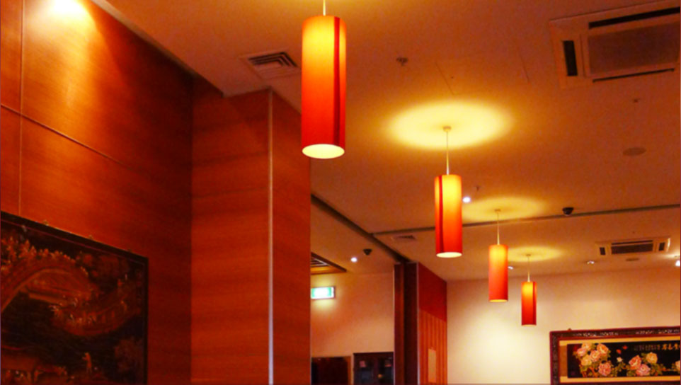
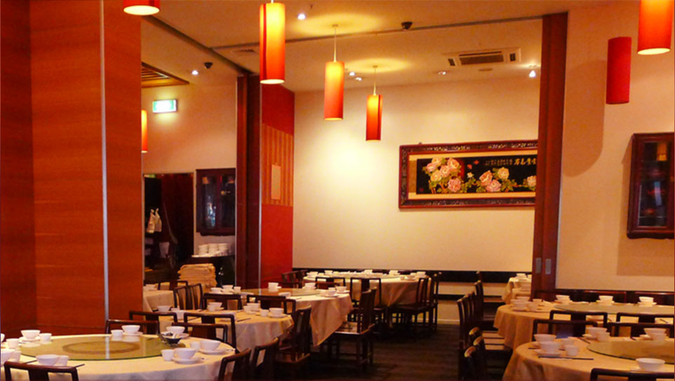
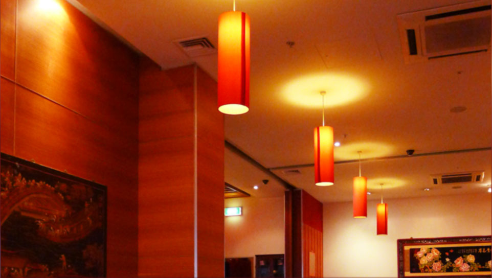
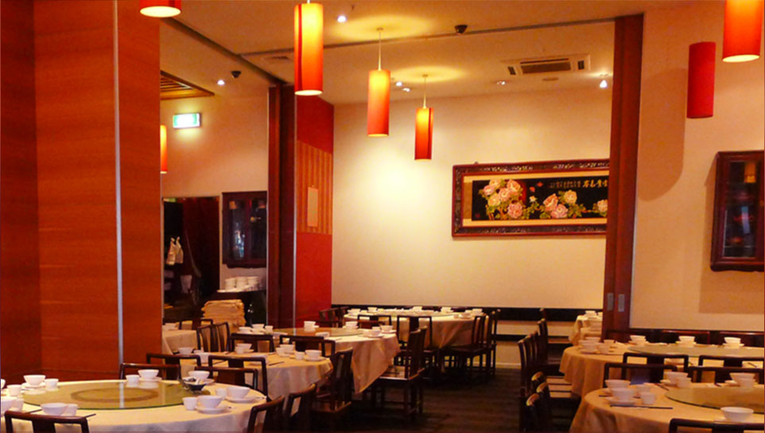
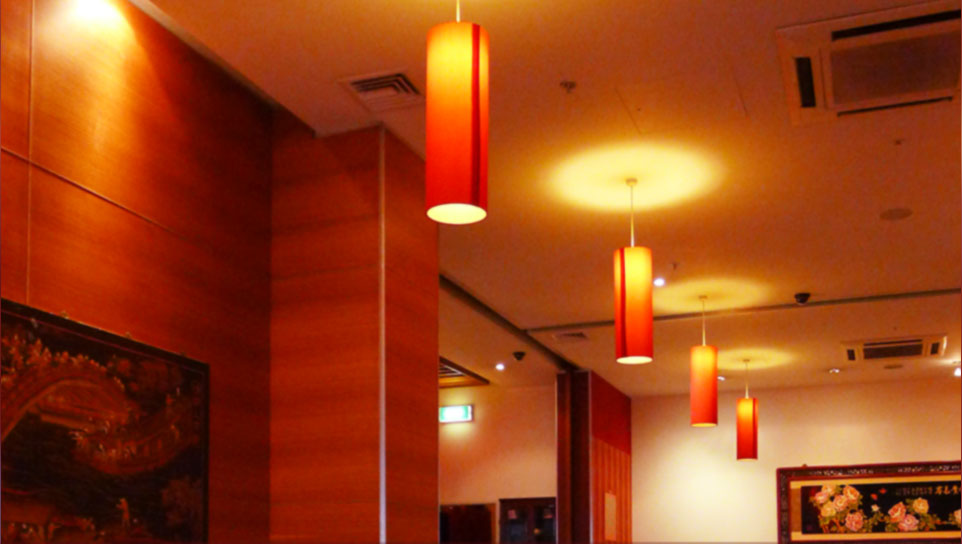

Welcome to China Restaurant.
"Good food, like the appreciation of good music, is an unmistakable sign of culture."Lin Yu Tang, Chinese Philosopher. We are proud to share with you some of the ancient culinary treasures of a land that boasts 5000 years of distinctive cuisine. The art form that is contemporary Chinese Cuisine is presented to you at China Restaurant through dishes that are complex yet subtle, full of flavour, fragrance, colour and texture. Today, our master chefs are honoured to prepare for you a selection of these dishes perfect reflections of balance and harmony.